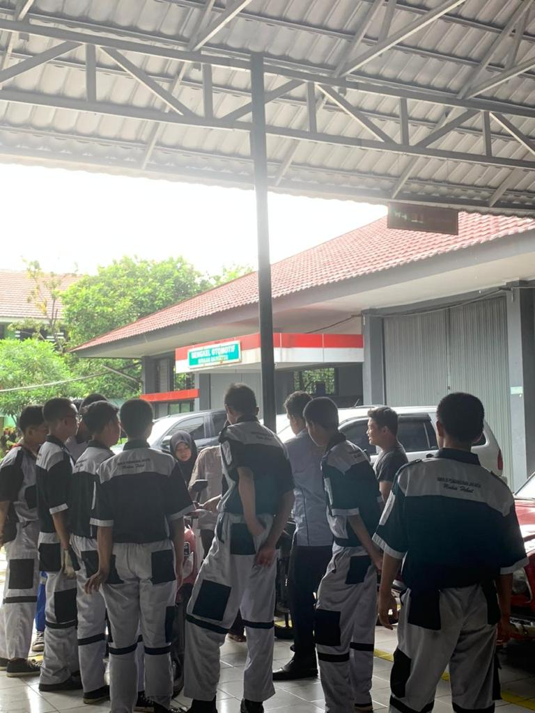
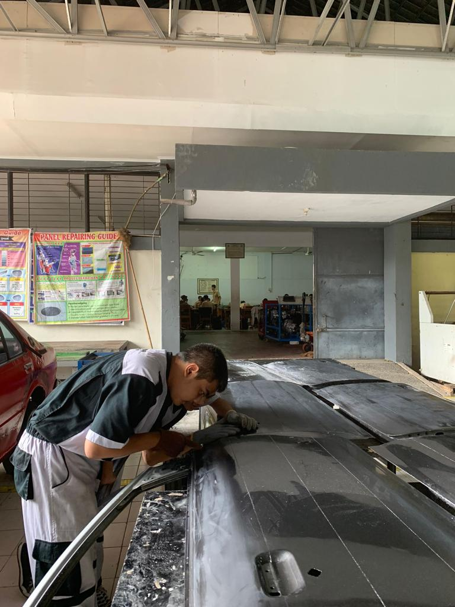
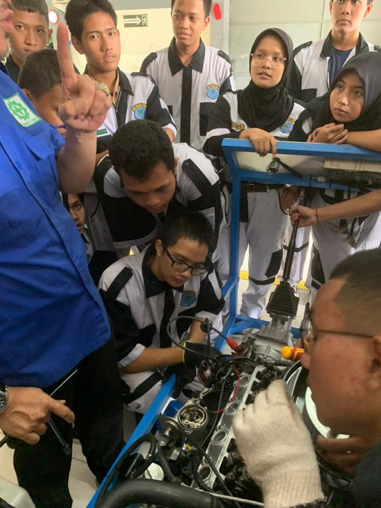

Manajemen
Mengatur pelayan terhadap kendaraan customer.
Mata pelajaran Teknik dan Manajemen Perawatan Otomotif (TMPO) adalah mata pelajaran yang diajarkan di Sekolah Menengah Kejuruan (SMK) untuk Jurusan Teknik dan Manajemen Perawatan Otomotif (TMPO). Teknik dan Manajemen Perawatan Otomotif (TMPO) merupakan salah satu Kompetensi Keahlian dari Program Keahlian: Teknik Otomotif, dan Bidang Keahlian: Teknologi dan Rekayasa. Pelayanan di bidang perbaikan dan perawatan kendaraan ringan.

|

ManajemenMengatur pelayan terhadap kendaraan customer. |

PerawatanPerawatan secara menyeluruh kendaraan. |

OtomotifPelayaan tambahan seputar alat otomotif kendaraan ringan. |